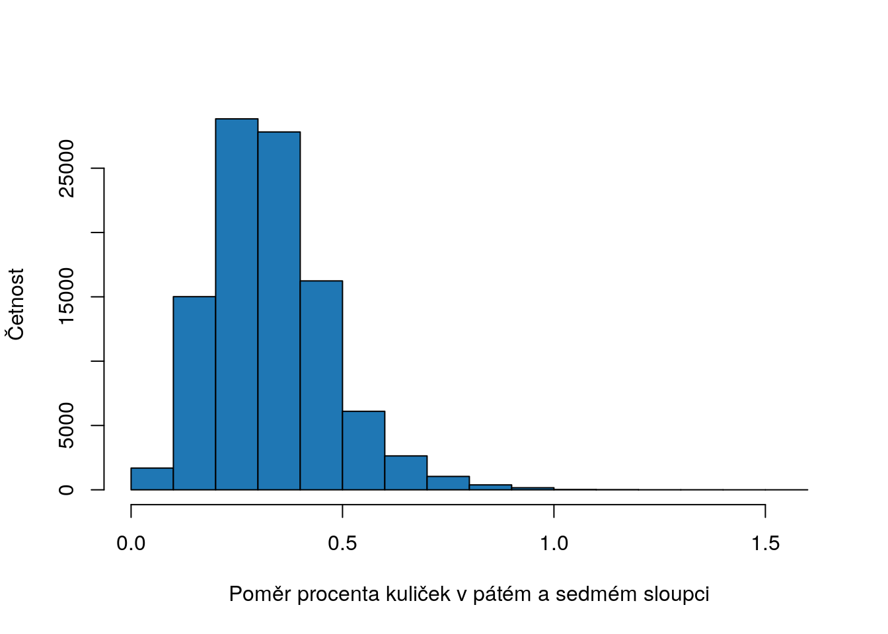

Kapitola 4 Centrální limitní věta
Centrální limitní věta (CLV) je jednín z úžasných jevů matematiky. Během této kapitoly se dostaneme dále do základů statistiky a představíme si jeden z nejpoužívanějších principů statistiky, který nás bude provázat po zbytku semestru. Opět to bude náročnější kapitola a možná se k ní budete chtít vrátit zpět, jak budeme centrální limitní větu aplikovat na další statistické problémy. V této kapitole si představíme její princip. V kapitole o pravděpodobnostních rozloženích 3 jsme si ukázali, že existují různé typy rozložení, které je možné použít k popsání (připodobnění) toho, jakých hodnot bude proměnná nabývat a v jaké četnosti. Často nás zajímají nejenom hodnoty náhodné proměnné, ale také některé její parametry, jako například průměr nebo procenta. Už víme, že hodnoty náhodné proměnné jsou ovlivněny náhodou, které může mít různé důvody. Je asi intuitivní, že i parametry této proměnné budou touto náhodou ovlivněny a že nebudou vždy stejné.
4.1 Procenta
Vraťme se zpět ke Galtonově boxu. My jsme tento proces simulovali jako \(x_i \sim B(10000, 0.5)\). Řekněme, že nás zajímá zjistit jaké procento míčků skončí v prostředním (sedmém) sloupci \(p\). Procento je nějaký parametr naší proměnné, který jsme zvolili, ale mohli bychom si zvolit například medián. Toto procento bude pokaždé když kuličky spustíme znova trochu jiné. Centrální limitní věta nám pomůže kvantifikovat, jak jiné toto procento bude.
set.seed(4)
# pocet micku
n <- 10000
# pravdepodobnost uspechu (napravo)
p <- 0.5
# 0 by znamenalo všechny kulicky nalevo, 12 všechny kulicky napravo,
# celkem 13 možností, jak mohou kulicky skončit
s <- 12
vysledek <- rbinom(n = n, size = s, prob = p)
cetnost <- table(vysledek)
# pouzijeme nazev 6 v tabulce, protoze 0 je prvni sloupec
p_7 <- cetnost[names(cetnost) == "6"] / nNapříklad v simulaci, kterou jsme provedli v kodu nahoře je procento kuliček v sedmém sloupci \(p_7\) rovné 0.2234. Když jsme simulovali hodnoty náhodné proměnné, tak každá kulička představovala jedno pozorování. V simulaci, kterou si teď předvedeme, vždy spustíme kuličky, spočítáme procento v sedmém sloupci, kuličky pustíme znova, opět spočítáme procento kuliček v sedmém sloupci a tak dále. Každé procento, které takto vypočítáme, představuje jednu hodnotu nějaké nové náhodné proměnné. Nakonec si ukážeme jak vypadá histogram těchto procent. Předtím, než se na animaci podíváte zkuste pomocí vašich znalostí pravděpodobnostních rozložení odhadnout, jaké bude mít rozložení průměrů tvar.
# funkce na vypocet p_7
rel_cetnost <- function(x, k) {
cetnost <- table(x)
p <- cetnost[names(cetnost) == k] / sum(cetnost)
return(p)
}
# pocet simulaci
S <- 1:90
p_7 <- rep(NA, length(S))
for (i in S) {
# spustime kulicky
vysledek <- rbinom(n = n, size = s, prob = p)
# vypocitame procento kulicek v kazdem sloupci
p_7[i] <- rel_cetnost(vysledek, "6")
hist(p_7,
breaks = seq(0.21, 0.24, by = 0.002),
xlim = c(0.21, 0.24),
main = paste0("Počet opakových spuštění kuliček: ", S[i]),
col = "#1f77b4",
xlab = "Procento", ylab = "Četnost"
)
}
Graf 4.1: Rozložení procenta kuliček v sedmém sloupci při opakovaném spuštění kuliček
Jak je vidět z histogramu v 4.1, rozložení procent z opakovaných spuštění kuliček je zhruba normálně rozloženo s průměrem 0.22 a směrodatnou odchylkou 0, nebo jinak \(p \sim N(\) 0.225 \(,\) 0 \()\). To není žádné překvapení. Jak víme z 3.3 spojité proměnné, které se shlukují okolo nějakého bodu a mohou nabývat hodnot na levo a na pravo od tohoto bodu bývají často normálně rozděleny. Centrální limitní věta nám popisuje tento fenomen a říká nám, jak vypočítat parametry tohoto normálního rozložení (tedy průměr a směrodatnou odchylku). V našem případě bychom parametry takového rozložení mohli vypočítat jako \[p \sim N(p, \frac{\sigma_p}{\sqrt{n}})\]kde \(n\) je velikost výběru (10000 v našem případě), pričemž z 3.2 víme, že rozptyl u procent vypočítáme jako \(\sigma^2 = p*(1-p)\) a směrodatnou odchylku jako \(\sigma = \sqrt{p*(1-p)}\). Protože teoretická rozložení parametru využívá k aproximaci normální rozložení, platí pro PDF stejné překlady, jaké jsme si ukazovali v 3.3, tedy, že jednotlivé hodnoty jsou na sobě nezávislé. Graf 4.2 ukazuje porovnání histogramu z 90 opakovaných puštění kuliček a jejich procent v sedmém sloupci s teoretickým rozložením tohoto parametru podle CLV8.
# vypocitame p
p_hat <- dbinom(6, size = 12, prob = 0.5)
# vypocitame rozptyl dat
s_hat <- p_hat * (1 - p_hat)
# vypocitame pdf rozlozeni procent
x <- seq(0.21, 0.24, length.out = 1000)
pdf <- dnorm(x, mean = p_hat, sd = sqrt(s_hat / n))
hist(p_7,
breaks = seq(0.21, 0.24, by = 0.002),
xlim = c(0.21, 0.24),
col = "grey",
main = "",
xlab = "Procento", ylab = "Četnost"
)
# pridame na druhou osu
par(new = TRUE)
plot(x, pdf,
type = "l", lwd = 2,
col = "#1f77b4",
axes = FALSE,
xlab = "", ylab = "",
bty = "n"
)
legend("topright",
legend = c(
"Rozložení procent",
paste0("N(", round(p_hat, 2), ",", round(sqrt(s_hat / n), 3), ")")
),
lwd = c(2, 2),
col = c("grey", "#1f77b4"),
cex = 0.7
)
thicks <- round(seq(0, max(pdf), by = 10), 2)
axis(4, at = thicks, labels = thicks)Graf 4.2: Porovnání rozložení 90 opakování procent kuliček v sedmém sloupci s teoretickým rozložením procent kuliček v sedmém sloupci podle CLV
Jak je zřejmé s parametrů rozložení, poloha tohoto rozložení určena průměrem a šířka rozložení bude ovlivněna \(\frac{\sigma_p}{\sqrt{n}}\), tedy mírou variability v datech a velikostí našeho výběru. Čím větší velikost výběru, tím menší je směrodatná odchylka rozložení parametru9. Aby nedocházelo k záměně směrodatné odchylky rozložení parametru a směrodatné odchylky výběru, používá se pro směrodatnou odchylku rozložení parametru pojem směrodatná chyba.
Doposud jsme pro průměr rozložení parametru a směrodatnou odchylku používali populační parametry, tedy věděli jsme hodnotu \(p\) v populaci a také rozptyl dat \(p*(1-p)\). To vychází z toho, že u Galtonova boxu víme, jaký náhodný proces data generuje. Většinou ale tento náhodný proces neznáme a nemáme tedy informace o populačním průměru a směrodatné odchylce. V takovém případě odhadneme obě hodnoty z dat (výběru). Je asi intuitivní, že pokud bude velikost našeho výběru \(n\) malá, bude existovat větší nejistota o odhadu populačního průměru a směrodatné odchylky z dat. Abychom tuto dodatečnou nejistotu zachytili v teoretickém pravděpodobnostním rozložení parametru, použijeme k jeho aproximaci t-rozdělení s \(n-1\) stupni volnosti, tedy \[p \sim T(p, \frac{s_p}{\sqrt{n}}, n-1)\]10Jak víme z 3.4, t-rozložení dává větší pravděpodobnost hodnotám více vzdáleným od průměru.
Graf 4.3 ukazuje teoretické rozložení procenta kuliček v sedmém sloupci \(p_7\) při \(n=20\), \(n=50\) a \(n=100\). Tedy místo 10000, pustíme pouze 20, 50 a 100 kuliček. Abychom ukázali použití t-rozložení a odhadu průměru a směrodatné odchylky z výběru, budeme chvilku předstírat, že nevíme jejich teoretické hodnoty a proto \(p_7\) a \(s_7\) odhadneme z výběru Jak je vidět při puštění pouze 20 kuliček je náš odhad velmi nepřesný. Procento kuliček, které skončí v sedmém sloupci může klidně být od 0 do 0.411. To dává smysl, představte si, jaká míra nejistoty existuje, pokud do Galtonova boxu nasypeme pouze 20 kuliček. S tím, jak se zvětšuje velikost výběru \(n\), klesá míra naší nejistoty o odhadu procenta kuliček v sedmém sloupci, klesá směrodatná chyba odhadu a tím pádem o šířka teoretického rozložení parametru.
# definujeme velikost vyberu
N <- c(20, 50, 100)
# definujeme hodnoty pro ktere budeme pocitat pdf
x <- seq(0.00,1, length.out = 1000)
# vytvorime prazdný graf, do ktereho budeme pridavat
plot(x,
type= "n",
xlim = c(0, 0.8),
ylim = c(0, 7),
xlab = "Procento", ylab = "PDF")
cols <- rev(RColorBrewer::brewer.pal(length(N) + 1, name = "Blues") )
for(i in 1:length(N)) {
# provedeme vyber a odhadneme p a sd
n <- N[i]
vyber <- rbinom(n = n, size = s, prob = p)
p_hat <- rel_cetnost(vyber, "6")
s_hat <- sqrt(p_hat*(1-p_hat))
# vypocteme pdf pro T(p, s/sqrt(n), n-1) podle zobecneneho t-rozlozeni
pdf_t <- 1/sqrt(s_hat / n) * dt((x - p_hat)/sqrt(s_hat / n), df = n-1)
# pridame t-rozlozeni
lines(x, pdf_t, type = "l", lwd = 2, col = cols[i])
}
# pridame legendu
legend("topright",
legend = c(paste0("T(p, s/sqrt(n), ", N, ")")),
col = cols[1:length(N)],
lwd = c(2, 2)
)
Graf 4.3: Porovnání vlivu velikosti výběru n na směrodatnou chybu odhadu
4.2 Interval spolehlivosti
4.3 Bootstrap
Podíl kuliček 7 a 10 sloupce.
4.4 Průměr
4.5 simulace
Následující animace ukazuje princip centrálního limitní věty.
set.seed(42)
# pocet vyberu
S <- 2^c(1:10)
# ulozeni dat
X <- matrix(NA, nrow = 0, ncol = 2)
colnames(X) <- c("x", "frame")
# vyber o velikosti n
N <- 50
# simulace
for (i in 1:length(S)) {
s <- S[i]
for (n in 1:s) {
mu <- mean(runif(N, min = -10, max = 10))
X <- rbind(X, c(mu, s))
}
}
# zobrazeni dat
for (s in S) {
hist(X[X[, 2] == s, 1],
col = "#1f77b4",
ylab = "Četnost", xlab = "Průměr U ~ (-10, 10)", main = paste0("Počet výběrů: ", s),
xlim = c(-3, 3),
breaks = 10
)
}
Graf 4.4: Princip centrálního limitní věty
4.6 Směrodatná odchylka
Ukázat teoretické rozložení populační směrodatné odchylky. Simulovat predikce proměnné
4.7 Cvičení
Spočtěte, v jakém intervalu se bude pohybovat průměrná doba čekání na tramvaj, když tramvaj pojede jednou za 8 minut. Spočtěte 90% interval spolehlivosti a okomentuje, co tento interval vyjadřuje.
Klíčové pojmy:
- Zákon velkých čísel
- Centrální limitní věta
- Inference
- Bodový odhad
- Interval spolehlivosti
My jsme zákon velkých čísel používali intuitivně už v minulém semestru. Zákon velkých čísel říká, že průměr velkého počtu pozorování (výsledků pokusů) se bude limitně přibližovat očekávané hodnotě, neboli \(\overline{X_n} = \frac{1}{n}\sum_{i=1}^{n} X_i\) \(\overline{X_n} \to \mu\), pokud \(n \to \infty\). Pojďme si to ukázat na příkladu hodu kostkou. Očekávaná hodnota hodu kostkou je \(E(X) = \frac{(a+b)}{2}\). Předpokládáme přitom, že hodnoty náhodné proměné \(X\) jsou jsou nezávislé a stejně rozdělené (independent, identically distributed \(X_{iid}\)).
a <- 1
b <- 6
ocekavana_hodnota <- (a + b) / 2
# 10 hodů
n <- 10
kostka <- c(1:6)
hody_n10 <- sample(kostka, size = 10, replace = TRUE)
prumer_n10 <- mean(hody_n10)
print(paste0("Průměr ", n, " hodů je: ", prumer_n10))## [1] "Průměr 10 hodů je: 2.9"# nasimulujeme si velke mnozstvi hodu kostkou
n <- 10000
hody <- sample(c(1:6), replace = TRUE, prob = rep(1 / 6, 6), size = n)
# vytvorime si vektor, do ktereho budeme ukladat prumery
prumer <- rep(0, n)
# vypocitame kumulativni prumer
for (i in c(1:n)) {
prumer[i] <- mean(hody[1:i])
}
# zobrazime
plot(prumer,
xlab = "Pořadí hodů", ylab = "Průměr",
main = "Průměrná hodnota hodu kostkou v závislosti na počtu hodů",
cex.main = 0.9, # mensi title, aby se vesel
type = "l", lwd = 2,
col = "#1f77b4"
)
lines(c(1, 10000), c(ocekavana_hodnota, ocekavana_hodnota),
col = "black"
)
legend("topright",
legend = c("Očekávaná hodnota"),
col = "black", lty = 1,
cex = 0.7
)
Stejně tak platí, že průměr proměnné pocházejícího z binomického rozložení se bude blížit očekávané hodnotě rozložení, z kterého pochází. Jako příklad si ukážeme data o narozených dětech. Předpokládejme, že měsíc narození dětí je uniformně rozložen, tedy, že existuje stejná pravděpodobnost, že se děti rodí v lednu jako v červenci. Tedy pravděpodobnost toho, že se dítě narodí v nějaký měsíc je 1/12. Simulujme proces, v kterém se dítě buď narodí v dubnu (1) nebo nenarodí (0).
ocekavana_hodnota <- 1 / 12
n <- 10000
# nasimulujeme velke mnozstvi deti. 1 pokud se narodily v dubnu 0, pokud ne
deti <- rbinom(n = n, size = 1, prob = ocekavana_hodnota)
# vektor kam budeme ukladat kumulativni prumer
prumer <- rep(0, n)
for (i in c(1:n)) {
prumer[i] <- mean(deti[1:i])
}
# zobrazeni
plot(prumer,
xlab = "Pořadí dítěte", ylab = "Průměr",
main = "Průměrná hodnota, že se dítě narodilo v dubnu",
cex.main = 0.9, # mensi title, aby se vesel
type = "l", lwd = 2,
col = "#1f77b4"
)
lines(c(1, 10000), c(ocekavana_hodnota, ocekavana_hodnota),
col = "black"
)
legend("topright",
legend = c("Očekávaná hodnota"),
col = "black", lty = 1,
cex = 0.7
)
Zákon velkých čísel má pro statistiku velké implikace. Pokud totiž máme dostatečně velké množství hodnot náhodné proměnné, bude se její průměr blížit průměru rozložení, z kterého pochází (za dodržení předpokladů, tedy \(X_{iid}\)). Jak jsme ale viděli ze simulací nahoře, to jak se bude průměr proměnné blížit očekávané hodnoty rozložení, záleží na tom, kolik hodnot naše proměnná obsahuje. Průměr kardinální proměnné je také náhodná proměnná, která bude proměnnou spojitou. Označme ji třeba \(\overline{X}\). I tato náhodná proměnná bude mít svoje rozložení. Průměrem tohoto rozložení bude průměr proměnné \(\overline{X}\) (označme ho třeba \(\mu\)) a rozptyl bude \(\frac{\sigma^2}{n}\), kde \(\sigma^2\) značí rozptyl původního rozložení a \(n\) počet hodnot proměnné \(\overline{X}\). Tedy \(\overline{X} \sim N(\mu, \frac{\sigma}{\sqrt{n}})\). Ukažme si jak centrální limitní věta funguje na příkladu proměnné pohlaví. Ze sčítání lidu víme, že v ČR je zhruba 51% žen a 49% mužů. Při sčítání lidů se ptáme úplně všech občanů ČR, známe tedy hodnoty celého rozložení proměnné. Většinou se ale v sociologických šetřeních všech občanů ptát nemůžeme a používáme pouze výběr z této populace. My si teď tuto situaci nasimulujeme a ukážeme si, že průměry jednotlivých výběrů z této populace (z tohoto rozložení) budou mít normální rozložení \(\overline{X} \sim N(\mu, \frac{\sigma}{\sqrt{n}})\). \(\frac{\sigma}{\sqrt{n}}\) se nazývá standardní chyba. Tedy, že pokud bychom měli jenom jeden průměr, mohli bychom centrální limitní větu použít k tomu, abychom odhadli rozložení průměru.
# populacni hodnoty rozlozeni
p <- 0.51
rozptyl <- p * (1 - p)
# pocet vyberu
k <- 10000
# velikost vyberu
n <- 100
# vytvorime vektor, kam budeme ukladat nase prumery
prumery <- rep(0, k)
for (i in c(1:k)) {
# udelame nahodny vyber z populace
vyber <- sample(c(1, 0), size = n, prob = c(0.51, 0.49), replace = TRUE)
# a ulozime prumer z vyberu
prumery[i] <- mean(vyber)
}
# vypocitame parametry, ktere potrebujeme na zobrazeni teoretickeho normalniho rozlozeni prumeru, podle centralni limitni vety
sigma <- sqrt(rozptyl)
x <- seq(0.3, 0.7, by = 0.001)
standardni_chyba <- sigma / sqrt(n)
pdf <- dnorm(x, mean = mean(prumery), sd = standardni_chyba) # hustota pravdepodobnosti
# zobrazime histogram prumeru (nase simulace)
hist(prumery,
ylab = "Četnost", xlab = "Výběrový průměr (% žen)",
xlim = c(0.3, 0.7), # musime urcit, aby byly prekryvajici ve stejne pozici vuci ose x
col = "#1f77b4",
main = "X~N(0.51,0.25/sqrt(100))"
)
par(new = TRUE) # na pridani nove osy
# nyni prekryjeme teoretickou hustotou pravdepodobnosti podle centralni limitni vety
plot(x, pdf,
type = "l",
axes = FALSE, bty = "n", xlab = "", ylab = "", # nezobrazujeme osy, jinak by se prekryvaly
xlim = c(0.3, 0.7), # musime urcit, aby byly prekryvajici ve stejne pozici vuci ose x
col = "black", lwd = 2
)
lines(c(p, p), c(0, 8), col = "red", lwd = 2)
axis(side = 4)
mtext("f(x)", side = 4, line = 3)
# pridame legendu
legend("topleft",
legend = c("PDF", "Populační průměr"),
col = c("black", "red"), lty = c(1, 1),
cex = 0.6
)
Pojďme si ukázat, že průměry budou mít normální rozdělení nezávisle na tom, z kterého rozložení pocházejí. Ve skutečnosti, většinou neznáme populační rozptyl \(\sigma\) a tak ho nahrazujeme odhadem, který uděláme z našeho výběru. Tento odhad označujeme jako \(S^2\) a vypočátáme ho jako \(S^2 = \frac{\sum_{i=1}^{n} (x_i - \overline{x})^2}{(n-1)}\).
# nejdrive si vytvorme nejake silene rozlozeni
x <- seq(0, 12, length.out = 10000)
# vytvorime rozlozeni, ktere ma 2 vrcholy
pdf <- dnorm(x, mean = 4, sd = 1) + dnorm(x, mean = 8, sd = 1)
# ted vygenerujeme nahodnou promennou z tohoto rozlozeni
p <- pdf / sum(pdf) # pdf neni pravdepodonost, proto ji musime standardizovat, aby byla mezi 0 a 1
X <- sample(x, size = 1e6, replace = TRUE, prob = p) # vybere hodnoty x s pravdepodobnostni, ktera se rovna jejich standardizovane hustote pravdepodobnosti
ocekavana_hodnota <- mean(X)
# zobrazime si nasi promennou
plot(x, pdf,
ylab = "f(x)", xlab = "X", main = "PDF strašidelné proměnné",
col = "#1f77b4", type = "l", lwd = 2
)
# pojdme si opet ukazat,ze pokud bychom delali mnoho vyberu z tohoto rozlozeni, tak jejich prumery by byly normalne rozlozene a odpovidaly by rozlozeni popsanem v centralni limitni vete
# pocet vyberu
k <- 10000
# velikost vyberu
n <- 100
# vytvorime vektor, kam budeme ukladat nase prumery
prumery <- rep(0, k)
for (i in c(1:k)) {
# udelame nahodny vyber z populace
vyber <- sample(x, size = n, prob = p, replace = TRUE)
# a ulozime prumer z vyberu
prumery[i] <- mean(vyber)
}
# vypocitame parametry, ktere potrebujeme na zobrazeni teoretickeho normalniho rozlozeni prumeru, podle centralni limitni vety
# odhadneme smerodatnou odchylku z vyberu (treba toho posledniho z nasi for loop)
s <- sd(vyber)
# standardni chyba
standardni_chyba <- s / sqrt(n)
pdf <- dnorm(x, mean = mean(prumery), sd = standardni_chyba)
# zobrazime histogram prumeru (nase simulace)
hist(prumery,
ylab = "Četnost", xlab = "Výběrové průměry",
xlim = c(5, 7), # musime urcit, aby byly prekryvajici ve stejne pozici vuci ose x
col = "#1f77b4",
main = "Histogram průměrů ze strašidelné proměnné"
)
par(new = TRUE) # na pridani nove osy
# nyni prekryjeme teoretickou hustotou pravdepodobnosti podle centralni limitni vety
plot(x, pdf,
type = "l",
axes = FALSE, bty = "n", xlab = "", ylab = "", # nezobrazujeme osy, jinak by se prekryvaly
xlim = c(5, 7), # musime urcit, aby byly prekryvajici ve stejne pozici vuci ose x
col = "black", lwd = 2
)
lines(c(ocekavana_hodnota, ocekavana_hodnota), c(0, 2), col = "red", lwd = 2)
axis(side = 4)
mtext("f(x)", side = 4, line = 3)
# pridame legendu
legend("topleft",
legend = c("PDF", "Populační průměr"),
col = c("black", "red"), lty = c(1, 1),
cex = 0.6
)
To, co jsme si právě ukázali má ohromné důsledky pro schopnost statistiky podávát informace o původním rozložení, i když máme pouze jeho část. Protože dokážeme odhadnout, v jakém rozmezí se zhruba bude výběrový průměr pohybovat, můžeme tak udělat odhad o tom, kde se bude nacházet průměr celé populace. Takovému procesu se říká statistická inference a budeme ji využívat v celém zbytku semestru k tomu, abychom usoudili něco o populačním parametru. Můžeme mít buď bodový odhad, kde odhadujeme jednu populační statisitku, nebo intervalový odhad, kde odhadujeme interval, kterém se populační statistika nachází. Ve zbytku cvičení se zaměříme na jednu implikaci, interval spolehlivosti. Interval spolehlivosti vyjadřuje interval možných hodnot parametru, který můžeme z výběrových dat očekávat. Tento interval má hladinu spolehlivosti, která určuje šířku intervalu. Interval spolehlivosti znáte například z předvolebních průzkumů, kdy je vedle % podpory strany uvedeno např. +/- 3%. Interval spolehlivosti se vypočítá jako \(IS_{1-\alpha} = \overline{x} +/- z \frac{s}{\sqrt{n}}\), kde \(z\) je z skor, tedy hodnota, která pochází ze standardizovaného rozložení s průměrem 0 a směrodatnou odchylkou 1. Pojďme se vrátit k příkladu proměnné pohlaví, kde známe populační průměr a ukážme si, jak interval spolehlivosti vypočítat.
# nyni si nasimulujeme situaci, kdy mame pouze jeden vyber o velikosti 100 (jako v realnem vyzkumu)
n <- 100
vyber <- sample(c(1, 0), size = n, prob = c(0.51, 0.49), replace = TRUE)
# urcime hladinu spolehlivosti (1-alpha)
alpha <- 0.11
# vypocitame vyberovy prumer
vyberovy_prumer <- mean(vyber)
# smerodatnou odchylku odhadneme z vyberu
s <- sd(vyber)
# vypocitame standardni chybu (tedy smerodatnou odchylku rozlozeni prumeru)
standardni_chyba <- s / sqrt(n)
# vypocitame z (vzdalenost od prumeru). Alpha /2 protoze chceme mit stejne procento rozlozeni na leve a prave strane rozlozeni
z <- qnorm(p = 1 - alpha / 2)
# vypocitame interval spolehlivosti
IS_89 <- c(vyberovy_prumer - z * standardni_chyba, vyberovy_prumer + z * standardni_chyba)
print(paste0("Interval spolehlivosti na konfidenční hladině ", 1 - alpha, " je: "))## [1] "Interval spolehlivosti na konfidenční hladině 0.89 je: "print(IS_89)## [1] 0.3898325 0.5501675Pojďme si udělat funkci, která interval spolehlivosti vypočítá.
interval_spolehlivosti <- function(x, alpha) {
n <- length(x)
vyberovy_prumer <- mean(x)
standardni_chyba <- sd(x) / sqrt(n)
z <- qnorm(p = 1 - alpha / 2)
IS <- c(vyberovy_prumer - z * standardni_chyba, vyberovy_prumer + z * standardni_chyba)
return(IS)
}V praxi tato hodnota znamena, že pokud bychom dělali výběry dokola a dokola, tak by další intervaly spolehlivosti obsahovaly skutečnou hodnotu v \(1-\alpha\) případů. Pojďme si teď tuto situaci ukázat. Budeme simulovat 100 výběrů, z každého výběru spočítáme interval spolehlivosti a zobrazíme ho šedě, pokud nepokrývá populační hodnotu a modře pokud ji pokrývá. Protože naše hladina spolehlivosti je 89%, očekáváme, že ze 100 intervalů spolehlivosti, jich asi 89 pokryje populační hodnotu a asi 11 ji nepokryje.
# pocet simulaci
k <- 100
# velikost vyberu
n <- 200
# urcime hladinu spolehlivosti
alpha <- 0.11
# populacni hodnota (tu sem davame, abychom se presvedcili, ze co jsme rekli nahore je pravda)
p <- 0.51
# pripravime si prazdny graf
plot(c(1:k), seq(0.3, 0.7, length.out = k),
type = "n", # nechceme nic zobrazit
xlab = "Výběry z populace", ylab = "% žen",
main = paste0("IS (konfidenční hladina=", 1 - alpha, " ) pro opakované výběry"), cex.main = 0.9,
col = "grey"
)
# nyní provedeme simulaci
for (i in c(1:k)) {
# udelame si vyber
vyber <- sample(c(1, 0), size = n, prob = c(0.51, 0.49), replace = TRUE)
is_ <- interval_spolehlivosti(x = vyber, alpha = alpha)
# zobrazime na grafu
if ((is_[1] >= p) | ((is_[2] <= p))) { # pokud je nas interval spolehlivosti mimo populacni hodnotu udelaj sede
points(i, mean(vyber),
col = "grey", pch = 20
)
lines(c(i, i), is_, col = "grey")
} else { # pokud je p uvnitr intervalu spolehlivosti pak zobraz modre
points(i, mean(vyber),
col = "#1f77b4", pch = 20
)
lines(c(i, i), is_, col = "#1f77b4")
}
}
# pridame populacni prumer
lines(c(1, n), c(p, p), col = "red")
# pridame legendu
legend("bottomleft",
legend = c("Populační průměr"),
col = c("red"), lty = c(1),
cex = 0.6
)
Zkuste si nyni hrat s konfidenční hladinou intervalu spolehlivosti a s velikostí výběru (\(n\)).
Následující text je dobrovolný
Interval spolehlivosti pro průměr, které jsme si ukázali nahoře má analytické řešení (dá se vypočítat). Ne všechny statistiky mají interval spolehlivosti, který se dá vypočítat analyticky. V takovém případě je možné použít techniku, která se nazývá bootstrapping. Principlem této techniky je simulování více výběrů a vytvoření rozložení statistiky empiricky (tedy z dat). Bootstrapping provádí náhodné výběry s opakováním o velikosti \(n\) z naší výběrové proměnné, která má velikost \(n\). Pojďme si ukázat bootstrapping na příkladu naší proměnné. Použijeme proměnnou vyber z naší simulace nahoře. Provedeme 10000 výběrů s opakováním z této proměnné vyber a u každého výběru vypočítáme průměr (protože to je statistika, která nás teď zajímá, pokud byste chtěli interval spolehlivosti pro jinou statistiku, místo průměru byste vypočítali jinou statistiku). Nakonec z tohoto empirické rozložení vypočítáme kvantily, které odpovídají zvolené konfidenční hladině a porovnáme k intervalu spolehlivosti, který jsme vypočítali pomocí analytického vzorce nahoře. Při boostrappingu mame tedy také pouze jeden výběr z populace, jako u analytického výpočtu intervalu spolehlivosti, ale výsledné rozložení statistiky (např. průměru) odhadneme empiricky.
# mame pouze jeden vyber o velikosti 100 (jako v realnem vyzkumu)
n <- 100
p <- 0.51
vyber <- sample(c(1, 0), size = n, prob = c(0.51, 0.49), replace = TRUE)
# pocet vyberu s opakovanim z nasi promenne
k <- 10000
# vytvorime si vektor, kam ulozime prumery
prumery_b <- rep(0, k)
# udelame bootstrapping
for (i in c(1:k)) {
prumery_b[i] <- mean(sample(vyber, size = n, replace = TRUE))
}
# urcime hladinu spolehlivosti (1-alpha)
alpha <- 0.11
# vypocitame kvantily
boostrap_is_89 <- quantile(prumery_b,
probs = c(alpha / 2, 1 - alpha / 2) # kvantil 0.055 a 0.945
)
print(paste0(alpha / 2, " a ", 1 - alpha / 2, " kvantily empirického boostrapovanáho rozložení průměru je: "))## [1] "0.055 a 0.945 kvantily empirického boostrapovanáho rozložení průměru je: "print(boostrap_is_89)## 5.5% 94.5%
## 0.40 0.56print(paste0("Interval spolehlivosti (vypočítaný analyticky) na konfidenční hladině ", 1 - alpha, " je: "))## [1] "Interval spolehlivosti (vypočítaný analyticky) na konfidenční hladině 0.89 je: "print(interval_spolehlivosti(vyber, alpha))## [1] 0.399752 0.560248\(p_7 \sim N(0.19, \sqrt {\frac{0.19*0.81}{n}})\)↩︎
Tento vztah není lineární, tedy 2x větší výběr neznamená 2x menší směrodatnou odchylku rozložení parametru, směrodatná odchylka rozložení klesá \(\frac{1}{\sqrt{n}}\)↩︎
Směrodatná odchylka odhadnutá z dat se označuje \(s\)↩︎
Velikost tohoto výběru je dokonce tak malá, že aproximace t-rozdělením nemusí být přesná↩︎